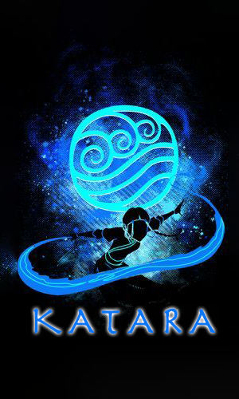
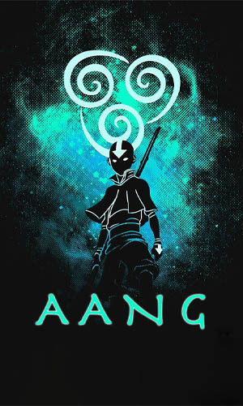
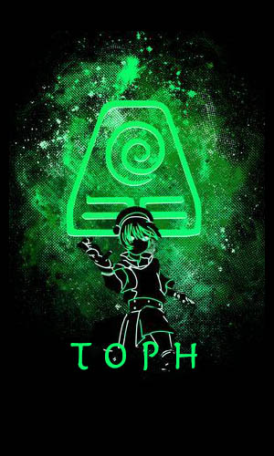

AVATAR
Jugar
Jugar
Reglas
Reglas
REGLAS DEL JUEGO
Selección de Personajes:
El jugador elige uno de los cuatro personajes: Zuko, Katara, Aang, o Toph.
El enemigo es asignado aleatoriamente de entre estos personajes.
Ataques:
El jugador elige entre tres ataques: Puño, Patada, y Barrida.
El enemigo elige su ataque aleatoriamente.
Reglas del Combate:
Empate:
Si ambos eligen el mismo ataque.
Victoria del Jugador:
Puño vence a Barrida .
Patada Φ vence a Puño .
Barrida vence a Patada Φ.
Derrota del Jugador:
Cualquier otra combinación.
Vidas:
Ambos comienzan con 3 vidas.
Perder un combate disminuye una vida.
Fin del Juego:
Victoria del Jugador:
Enemigo pierde todas sus vidas.
Derrota del Jugador:
Jugador pierde todas sus vidas.
Se deshabilitan los botones de ataque y se muestra un botón para reiniciar el juego.
Reinicio del Juego:
El jugador puede reiniciar el juego, recargando la página.
Regresar
Elige tu Personaje



Seleccionar
Selecciona un personaje
Cerrar
ATACA!
VS
Tu personaje es
y tiene
3
vidas
El enemigo es
y tiene
3
vidas
PUO
PATADA
BARRIDA
Reiniciar